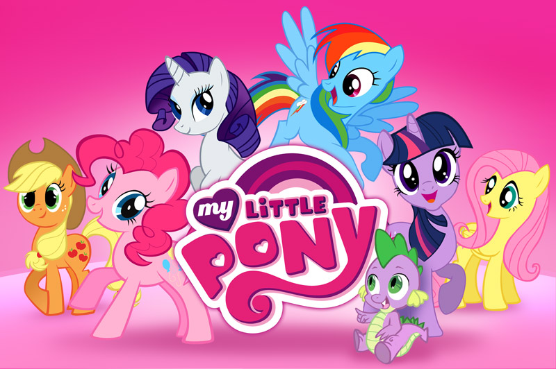

Історія
У місті Понівілі живуть виключно маленькі поні, які постійно потрапляють в цікаві історії. В епіцентрі сюжету «My Little Pony: Дружба - це диво» виявляється єдиноріг на ім'я Твайлайт Спаркл. Вона є відданою ученицею Принцеси Селестії. Це казкове створіння не бачить нічого крім книг і навчання. Вона повільно стає справжнім ботаном, у якої немає друзів і подруг. Селастія вирішує допомогти своїй вихованці і відправляє її в чарівний світ маленьких поні, які цінують свою дружбу. Вони вважають цей стан справжнім дивом, вартим лише вірних друзів. Тут Спаркл знайомиться відразу з декількома поні. Це перш за все пустотлива і грайлива Рейнбоу Деш, першокласна модниця раритет, трудоголік до мозку кісток Еплджек, скромна і сором'язлива Флатершай і невгамовна вередунка Пінкі Пай.
